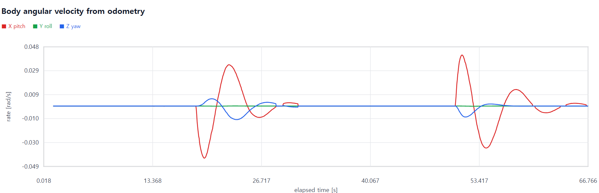

DAVE · ROS 2 · GAZEBO · TEAM PROJECT
ROV 회피 알고리즘을 함께 시험하는 수중 통합 환경
5인 팀에서 시뮬레이션 공통 환경과 위협 어뢰 제어를 맡아, 회피와 제어 담당자가 각자의 알고리즘 개발에 집중할 수 있는 실행·통신 기반을 구성했습니다.
- 팀 구성
- 5명, 어뢰·회피·제어·형상관리
- 담당
- 공통 환경과 위협 어뢰 제어
- 환경
- DAVE, ROS 2, Gazebo
- 협업
- 브랜치, PR, 자동화, 문서화
환경과 인터페이스
수중 환경에 ROV와 위협 어뢰를 함께 배치하고, SDF 모델과 플러그인을 수정해 필요한 동작과 센서 데이터를 구성했습니다. 기존 수중 글라이더 모델은 어뢰 형상과 추진 방식에 맞게 조정하고, 키보드 입력으로 자세와 추진 동작부터 검증했습니다.
초기 회의에서 회피 담당자가 요청한 예상 충돌 시간과 위치를 그대로 구현하기보다 데이터 흐름을 함께 그려봤습니다. 그 결과 실시간 어뢰 위치가 필요하다는 방향으로 요구를 정리하고 Gazebo-ROS Bridge에서 발행되는 토픽과 좌표계를 확인해 전달했습니다.



통합과 성능 개선
ROS 사용이 익숙하지 않은 팀원의 피드백을 받아 입출력 코드를 분리하고 필요한 데이터만 받을 수 있는 노드와 인터페이스를 제공했습니다. 복잡한 설치와 여러 터미널의 실행 순서는 의존성 설치·빌드 자동화와 5단계 명령으로 표준화했으며, Notion과 README에 환경 설정 및 문제 해결 과정을 기록했습니다.
통합 과정에서는 불필요하게 발행되던 센서 경로를 정리해 실행 성능을 개선했습니다. PP와 PNG 유도 방식은 동일한 환경에서 시험했으며, PP 회피 동작과 PNG에서 충돌이 다수 발생하는 한계를 함께 확인했습니다.
영상 영역어뢰 키보드 조작, PP 추적, PNG 시험 영상을 사용자가 정리한 뒤 배치합니다.